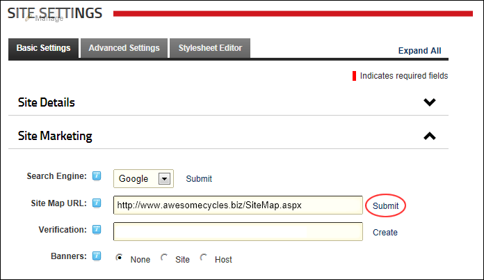

Submitting your Site Map URL to Google
How to submit a site map URL of your site to Google for improved search optimization.
Site name, description and keywords must been completed. See "Configuring your Site Details"
- Navigate to Admin >
 Site Settings.
Site Settings.
- Optional. Click on the country flag icon associated with the culture (language) to be updated. This field only displays when multiple languages are enabled. See "Viewing a Site in a Secondary Language". This field only displays when multiple languages are enabled.
- Select the Basic Settings tab.
- Expand the Site Marketing section.
- At Site Map URL, click the Submit link. This opens the Google Webmaster Tools web page in a new Web browser.

- On Google Webmaster Tools web page, complete the following steps:
- If you do not have a Google Account, sign up for one.
- Sign in to Google Webmaster Tools with your Google account.
- Go to the Dashboard.
- In the Add Site text box, enter the URL of your site. E.g. http://www.domain.com/
- Click the Verify link.
- Select Upload an HTML file. This will display a unique file name. Copy this name.
- Return to the Site Settings page of your DNN site and complete the following steps:
- In the Verification text box, enter the file name.
- Click the Create link.
- On Google Webmaster Tools web page, complete the following steps:
- Click the Verified button.
- On the Google Sitemaps tab, select Add General Web Sitemap.
- Copy the URL that is now displayed.
- Return to the Site Settings page of your DNN site and complete the following steps:
- Paste the URL you just copied into the Site Map URL text box.